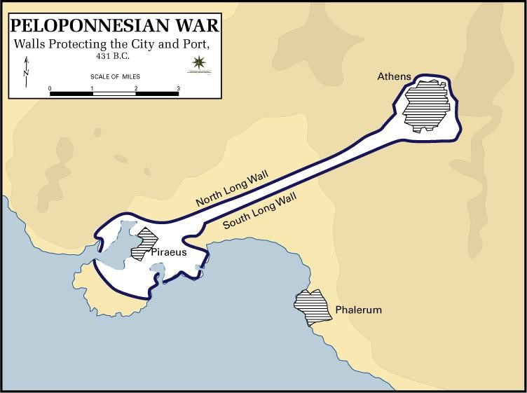

Archidamian War
The first phase of the Peloponnesian War was the Archidamian War, took place between 431 B.C. and 421 B.C.. Its name comes after the Spartan king at the time, Archidamus, who devised a unique strategy to draw the Athens into the fight. However, Pericles (the leader of Athens) did not want to fight, given that the Athenians had the Piraeus and the Long Wall and the Spartans simply did not have the resources to attack the naval port nor to tear down the walls.
Since neither side wanted to start a war in the first place, nor either side had a winning strategy, Sparta proposed to Athens to let Aegina lead the Delian League, give them back its autonomy, and to cancel the Megarian Decree. Obviously, Athens refused! This kept going back and forth for years, until a plague spread throughout Athens and Cleon came to power. Because of the disease, Sparta stopped going north to raid Attica, and started raiding Athens's allies, such as the city of Plataea, where the Spartans murdered everyone. In 425 B.C., 120 Spartans are captured by the Athenians in the island of Sphacteria, and these threatened to kill them all if Sparta ever set foot in Attica again. In 421 B.C., a guy called Nicias came out with a truce, known as the Peace of Nicias. The peace treaty put an end to this first phase of the war by asking for three conditions: the Spartan prisoners would be returned, Athens would give up the Plataea and gain a port city in Megara, and everything would return to the status quote it was before, meaning that up to this point the Peloponnesian War had solved nothing. Then Alcibiades came into play!